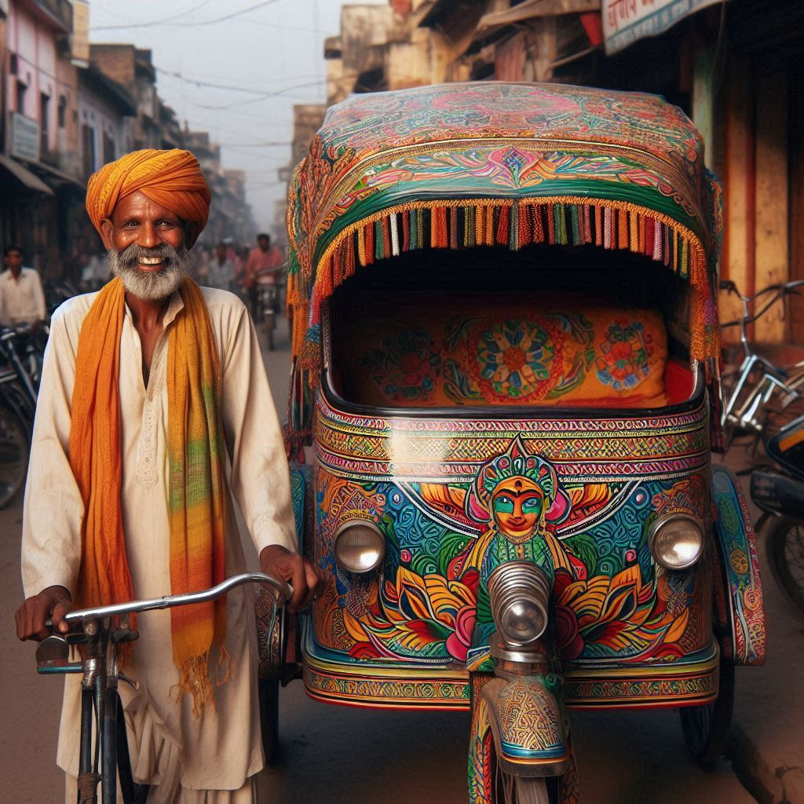
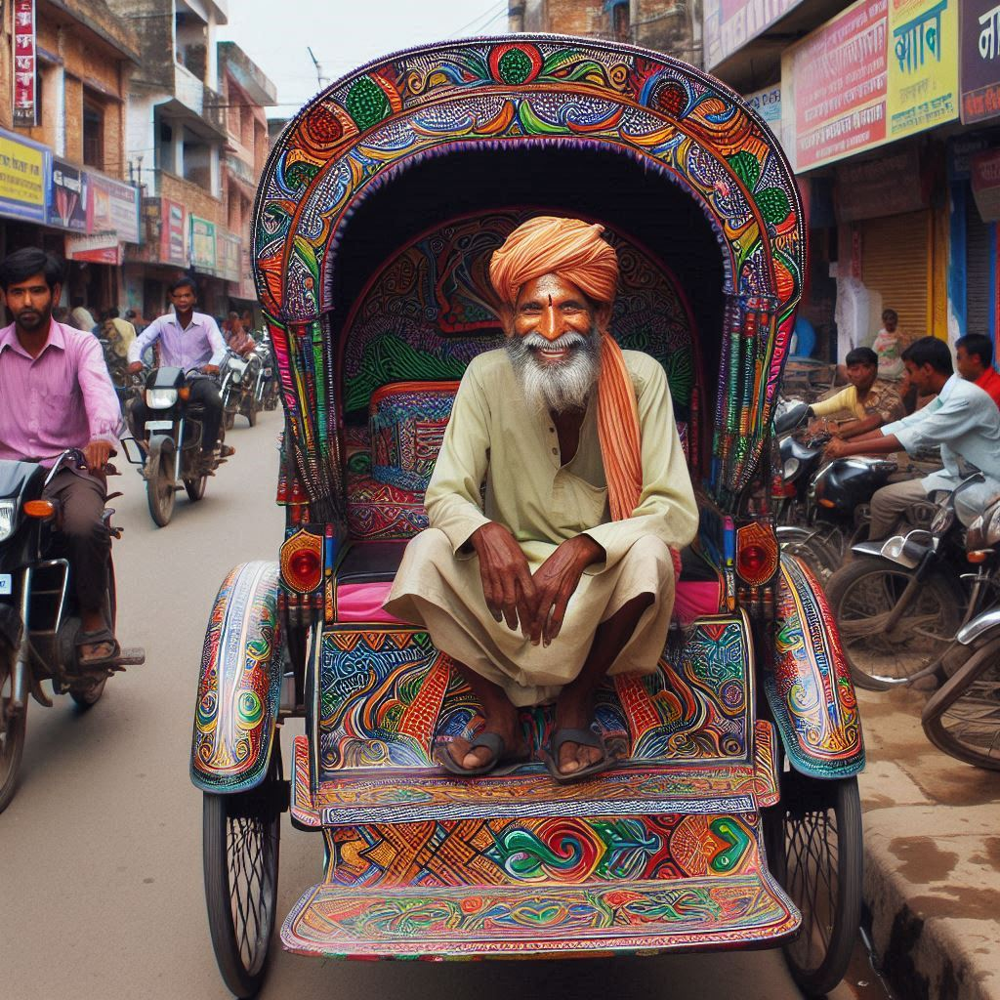

Bihar has a diverse transportation network that connects its cities and rural areas, facilitating the
movement of people and goods. Here’s an overview of the various modes of transport available in Bihar:
1. Road Transport
- Road Network: Bihar has an extensive road network, including national highways, state
highways, and rural roads. The National Highway Authority of India (NHAI) oversees the
maintenance and development of national highways, connecting major cities like Patna, Gaya, and
Bhagalpur.
- Buses: Various state-run and private bus services operate within and between cities,
providing affordable transportation options. The Bihar State Road Transport Corporation (BSRTC)
runs regular bus services to major destinations.
- Auto-rickshaws and Cycle-rickshaws: Commonly used for short distances within cities and
towns, auto-rickshaws and cycle-rickshaws offer convenient and accessible transport options.
2. Rail Transport
- Indian Railways: Bihar has a well-developed railway network, connecting it to major
cities across India. Key railway stations include Patna Junction, Gaya Junction, and Bhagalpur
Junction. The railway system is vital for both passenger travel and freight transportation.
- Luxury Trains: The state also hosts luxury trains like the Mahaparinirvan Express,
which commemorates the journey of Buddha and caters to tourists visiting Buddhist sites.


3. Air Transport
- Airports: Patna is the primary hub for air travel in Bihar, with the Jay Prakash
Narayan International Airport offering domestic and limited international flights. Other
airports, such as Gaya Airport, cater mainly to pilgrims visiting Bodh Gaya.
- Helicopter Services: Some private operators provide helicopter services for specific
routes, especially for tourism and pilgrimage.
4. Water Transport
- Rivers: The Ganges and its tributaries serve as potential waterways for transport, but
commercial water transport is not fully developed. Some regions have local ferry services that
operate across rivers.
- Tourism Cruises: With increasing interest in river tourism, efforts are being made to
develop cruise services along the Ganges, offering scenic views of the banks and cultural
experiences.
5. Non-Motorized Transport
- Bicycles: Bicycles are a popular mode of transport, especially in rural areas. Many
people use bicycles for commuting, shopping, and accessing local markets.
- Walking: In urban areas, walking is common for short distances, particularly in densely
populated regions.
Conclusion
Bihar's transportation system is a mix of modern and traditional modes, accommodating the needs of
its diverse population. While significant improvements have been made in recent years, ongoing
efforts to enhance infrastructure and connectivity will further strengthen the transportation
network, supporting economic growth and accessibility for residents and visitors alike.